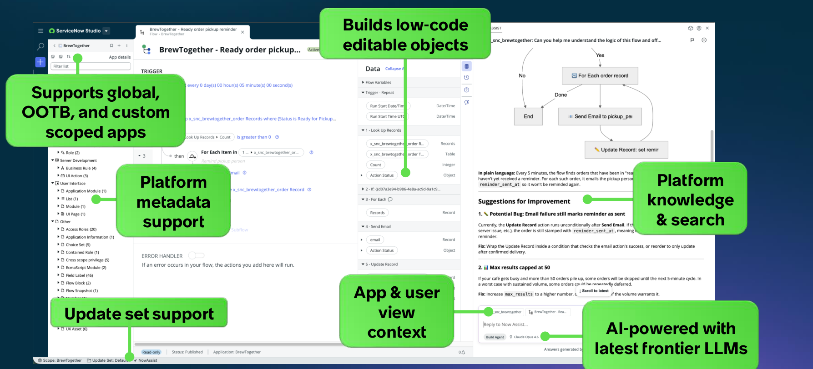

ServiceNow SDK、Git、ReleaseOps、CI/CD パイプラインを使って ServiceNow アプリをビルド・テスト・リリースするための、エンドツーエンドの SDLC ガイドです。
← → で移動 · Ashwin Patti, Shelby Cohen
［プレースホルダー：本スライドの日本語版セーフハーバー条項（将来の見通しに関する記述についての注意事項）は法務・IR承認前の暫定版です。発表前に、法務承認済みの正式な日本語文言に置き換えてください。］
PLACEHOLDER — PENDING LEGAL/IR-APPROVED JAPANESE TRANSLATION. SEE COMMENT ABOVE FOR ENGLISH SOURCE TEXT.
👋 ようこそ — 10:00〜17:00。今日一日で、実際のアプリのビルド・テスト・ソース管理・リリースまでを一貫して体験します。
グローバルアプリ、非グローバルアプリ、そして「move and edit」で構築された ITSM 実装 — すべてが同一モデルの下にある。
「move」による所有権を持たない非グローバルなカスタマイズ — そのメタデータには永続的なコンテナがなく、ServiceNow の所有権のままとなる。
新規構築であっても既存のカスタマイズであっても、開発モデルは一つに統一される。
ビルドエンジン。デプロイ可能なアーティファクトへコンパイル
IDE / プロダクションコードモード
ブランチ、PR、マージ
分離された開発用インスタンス
AI 支援による実装
自動テストフレームワーク
不変のアーティファクトストア
アセス（評価）、承認、リリース
TypeScript ベースの DSL — .now.ts ファイルでメタデータを定義し、フォームをクリックして回る代わりに、コンパイル時の型チェックと診断が得られる。
ビジネスロジックは型付きの @servicenow/glide インポートとして記述。UI Page は React、Svelte、Vue、Preact で構築。
インナーループ
続いてインストールとテスト
ブランチ分岐、プルリクエスト、行単位のレビュー、3-way コンフリクト解決、任意の時点への正確なロールバック。
XML トランスポート用のアーティファクトに過ぎない — コラボレーション、ブランチ分岐、人間が読める diff のために作られたものではない。
この対比については、後ほどソース管理のモジュールで詳しく掘り下げます。
9:55 – 10:10 · Build-ready な要件定義から再開します
「設備担当ユーザーとして、修理してもらうために設備のメンテナンスを依頼したい。」
エンティティ： Maintenance Request、Equipment
ロール： Requester（自分の依頼を作成・参照）、Technician（割り当てられた依頼を参照し、ステータスを更新）
Given–When–Then： Requester が稼働中の Equipment に対して依頼を送信した場合（Given）、送信すると（When）、ルーティングルールに従って「New」状態の Maintenance Request が作成され割り当てられる（Then）。
共有、非本番
フィーチャーブランチはここに存在
開発用とは別
テスト用とは別
開始前にサンドボックスを割り当て、その中でフィーチャーブランチを作成し、作業が終わったら廃棄しましょう。
main からフィーチャーブランチを作成やりたいことを平易な言葉で説明すると、Build Agent がエンティティ・ロール・ロジックを提案します — フォームをクリックして回る必要はありません。
あなたのアプリのスコープ内に、実際の Fluent メタデータオブジェクトを構築します — 後で捨てる使い捨てのプロトタイプではありません。
同じセッションでアプリとその ATF テストの両方を生成します — これが次にビルドしていく内容です。

アプリの既存のメタデータを読み取り、フローが実際に何をしているかを平易な言葉で説明し、具体的な修正案を提示します — 汎用的な回答ではなく、あなたのインスタンスに基づいたものです。
任意・アーキテクト向け
// Build Agent が裏で生成する Fluent コード export const MaintenanceRequest = Table({ label: 'Maintenance Request', fields: { equipment: Reference('equipment') } });
11:30 – 12:00
再開まで少々お待ちください
完了
完了
PR、マージ、公開
ReleaseOps、デプロイ
アプリはビルドとテストが完了しました。次はソース管理とリリースです。
1:45 – 2:00
now-sdk build / now-sdk install は、プラットフォーム上でもオフでも同一に動作します。| 機能 | Git | Update Set |
|---|---|---|
| ブランチ分岐と分離 | 可能 — サンドボックス＋フィーチャーブランチ | 不可 — 共有・last-write-wins |
| コンフリクト解決 | 行単位、3-way マージ | 手動、レコード単位 |
| レビュー | プルリクエスト | なし |
| 役割 | ソース管理 | トランスポート用アーティファクトのみ |
Git はブランチ分岐・レビュー・行単位のコンフリクト解決ができます。Update Set にはできません。
3:00 – 3:15 · ReleaseOps から再開します
ペイロードを格納するコンテナ。Update Set を Deployment Request にプロモートし、「Ready to Assess」にマークすると — アセスメントの手順（Instance Scan → Move to Test → Run ATF）がそれに対して実行されます。
クリアされた Deployment Request を本番環境へ移すレコード — On Demand（即時）または Scheduled（指定日時にまとめて実行）。ReleaseOps のコントローラー環境（通常は本番環境）上に存在します。
ここに到達する経路は2つあります：Update Set を Deployment Request にプロモートする方法（本ラボの方法）、または承認ゲート付きで Git から CI/CD REST API 経由でトリガーする方法（choose-your-own-adventure を参照）。
開発用インスタンス上での静的ポリシーチェック
アセスメント開始
機能面のカバレッジ
リリースの準備完了
ラボ：Deployment Request を作成し、「Ready to Assess」にマークして実行を確認しましょう
そのままアセスメントを再実行。
アセスメントは無効化されます — Deployment Request は Draft に戻り、新しいペイロードが必要になります。
手動承認で先に進めます。
3:45 – 4:00
より多くのメタデータ型、UI ビルダーからの transform/sync
Test Agent によるトリアージ、Cloud Runner、回帰スイート
now-sdk cicd、Git トリガーのパイプライン、承認ゲート
Connect Hub 経由で Figma/Miro を連携し、仕様から直接ビルド
Build Agent の出力の言葉・用語を変更するルール
Deployment Request、アセスメントのプレイブック、Ready for Deploy
興味のあるトラックを自由に探索してください — ご質問はいつでもどうぞ。始め方のヒントは演習を参照してください。
ご質問は Ashwin Patti、Shelby Cohen まで。
BONUS SLIDE — PENDING/ROADMAP CONTENT PER LEGAL（SLIDE 2）. PRESENTER TO FILL IN BEFORE SESSION.
BONUS SLIDE — PENDING/ROADMAP CONTENT PER LEGAL（SLIDE 2）. PRESENTER TO FILL IN BEFORE SESSION.
BONUS SLIDE — PENDING/ROADMAP CONTENT PER LEGAL（SLIDE 2）. PRESENTER TO FILL IN BEFORE SESSION.
now-sdk init --from）。BONUS SLIDE — PENDING/ROADMAP CONTENT PER LEGAL（SLIDE 2）. PRESENTER TO FILL IN BEFORE SESSION.
管理者が Figma/Miro アプリを設定
管理者が承認
MCP サーバーを有効化（MCP タブ）
ツールから直接仕様を読み取る
一度だけの管理者設定（Connect Hub ＋ AI Control Tower の承認）を行えば、あとは各開発者が自分の Build Agent 設定で有効化できます。
BONUS SLIDE — PENDING/ROADMAP CONTENT PER LEGAL（SLIDE 2）. PRESENTER TO FILL IN BEFORE SESSION.
このスライドの内容はすべて方向性を示すものであり、確約ではありません — スライド2のセーフハーバー条項を参照してください。
BONUS SLIDE — PENDING/ROADMAP CONTENT PER LEGAL（SLIDE 2）. PRESENTER TO FILL IN BEFORE SESSION.